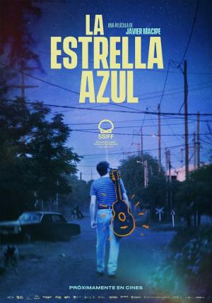

¿Cuales son las películas mejor valoradas de este año?
El año 2023 ha sido un año muy prolífico en cuanto a estrenos cinematográficos. Hemos podido disfrutar de grandes películas de todo tipo, desde grandes éxitos de taquilla hasta películas más independientes. En esta tabla, te presentamos un listado de las películas mejor valoradas de 2023, según la puntuación de la crítica en la web Filmaffinity.
pelicula |
valoracion |
procedencia |
ü•á 1. Pobres criaturas |
8,4⭐ |
Irlanda
|
ü•à 2. Spider-Man: Cruzando el Multiverso |
7,9⭐ |
Estados Unidos
|
ü•â 3. La estrella azul |
7,7⭐ |
España
|
4. Fallen Leaves |
7,6⭐ |
Finlandia |
5. Oppenheimer |
7,6⭐ |
Estados Unidos
|
üèÜ MEJOR BANDA SONORA DEL A√ëO.
Además de la película en sí, hay algo que se valora de igual manera, y estoy hablando de la banda sonora. Un elemento imprescindible en cualquier película y en el cual recae que en una escena se transmita la sensación requerida en ese preciso instante, que te haga meterte en la historia y en los sentimientos que se muestran. Entre las mejores bandas sonoras de 2023, la que se ha llevado el Óscar es la banda sonora de la película: "Sin novedad en el frente". Película alemana dirigida por Edward Berger y con Volker Bertelmann como compositor.